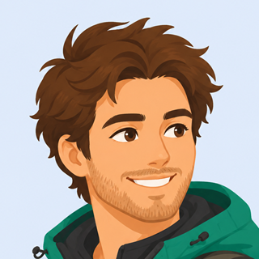

Десктопная раскладкамобильная раскладка не меняется ни в одном варианте
V1 · «Широкая колонна»
Самый бережный вариант: форма продукта не меняется — та же вертикальная лента карточек,
просто колонка на десктопе раскрывается с 430 до ~1000 px, а внутри карточек содержимое
раскладывается в две колонки. Навигация (сейчас нижняя панель) на десктопе переезжает в шапку.
+ дёшево и безопасно: это @media-правила поверх готовых экранов, ничего не переписываем;
+ один поток чтения — сверху вниз, как на телефоне: ничему не надо переучиваться;
− по-прежнему колонна: на 1920 px по краям остаётся воздух;
− карта пространства не становится героем — она просто одна из карточек.
колонка ≈ 1000 px · карточки внутри в 2 колонки · навигация в шапке
Лендинг · демо похожести · десктоп
ndimspace.app
Попробуйте прямо здесь
Оцените себя по пяти осям — Ваша точка сдвинется, а соседи пересчитаются.
МОИ ОСИ
Люблю тишину★★★★★★★★★★7
Путешествия★★★★★★★★★★5
Спорт★★★★★★★★★★4
Книги★★★★★★★★★★8
Чувство юмора★★★★★★★★★★6
Расстояния настоящие. Чем ярче линия — тем сильнее связь.
Алиса · ближе всех
заполнила все 5 осей
80%
похожесть80%
близость80%
общность100%
Настя
заполнила все 5 осей
42%
похожесть42%
близость42%
общность100%

Макс
заполнил только 3 оси
41%
похожесть41%
близость54%
общность75%
демо: звёзды слева, карта справа, три персонажа в ряд
V2 · «Рабочий стол» (рельс слева)
Классическая форма веб-приложения: слева постоянный вертикальный рельс навигации,
справа — контент во всю оставшуюся ширину, разложенный в две колонки.
Нижняя панель навигации остаётся только на телефоне.
+ навигация всегда на виду и не съедает вертикаль — контенту достаётся вся высота;
+ ширина используется целиком, до 1920 px включительно;
+ привычно: так устроено большинство веб-сервисов, объяснять не надо;
− форма «как у всех» — не подчёркивает, что NDim про пространство и математику.
Профиль · десктоп
ndimspace.app/profile
Николай
Минск · 1985 · оценил 24 измерения
ИЗМЕРЕНИЯ · 24 из 312
Люблю тишину★★★★★★★★★★7
Путешествия★★★★★★★★★★5
Спорт★★★★★★★★★★4
Книги★★★★★★★★★★8
Чувство юмора★★★★★★★★★★6
Музыка★★★★★★★★★★9
Готовка★★★★★★★★★★3
ЛИЧНОЕ И ВИДИМОСТЬ
Имя · Николай🌐 всем
Город · Минск👥 друзьям
Год рождения · 1985◌ никому
Ваше пространство сейчас
Алиса · ближе всех
80% похожести
80%
рельс 232 px · контент во всю ширину · 2 колонки (лента + карта)
Связи · десктоп (та же оболочка)
ndimspace.app/relations
Связи · 250 ближайших
Алиса
Минск · 12 общих осей
80%
похожесть80%
близость80%
общность100%
Настя
Гомель · 9 общих осей
42%
похожесть42%
близость42%
общность100%
Макс
Брест · 3 общие оси
41%
похожесть41%
близость54%
общность75%
…ещё 247
связи: сетка 2 колонки (на 1920 — 3)
V3 · «Пространство» (карта — герой)
Самый смелый: на десктопе главный объект экрана — карта пространства. Она занимает
всю правую половину и живёт постоянно: двигаешь звёзды слева — люди на карте перемещаются
прямо на глазах. Слева — узкая колонка-инспектор (оси, профиль, выбранный человек).
Это ровно та идея, ради которой проект и существует: увидеть себя среди людей.
+ единственный вариант, который на десктопе показывает суть NDim, а не список карточек;
+ карта получает 700–1000 px — диапазон перемещения виден по-настоящему;
+ ниоткуда не «списан» — своя форма, свой бренд;
− дороже: карту надо делать по-настоящему (масштаб, наведение, выбор человека);
− тексты и правка полей живут в узкой колонке — им там тесновато.
Профиль · десктоп · карта всегда справа
ndimspace.app/profile
Николай
24 измерения
ДВИГАЙТЕ — ПРОСТРАНСТВО ОТВЕЧАЕТ
Люблю тишину★★★★★★★★★★7
Путешествия★★★★★★★★★★5
Спорт★★★★★★★★★★4
Книги★★★★★★★★★★8
Чувство юмора★★★★★★★★★★6
Музыка★★★★★★★★★★9
ВЫБРАН НА КАРТЕ
Алиса
заполнила все 5 осей
80%
похожесть80%
близость80%
общность100%
Ваше пространство
расстояния настоящие · чем ярче линия, тем сильнее связь
карта ≈ 700–1000 px в ширину · оси и карточки — в колонке-инспекторе слева
Лендинг · демо · тот же приём (звёзды слева, живая карта справа)
ndimspace.app
Попробуйте прямо здесь
Оцените себя по пяти осям — Ваша точка сдвинется, а соседи пересчитаются. Алгоритм настоящий.
карточки персонажей открываются по клику на лицо — карта остаётся главной
V4 · «Витрина» (три зоны)
Плотная информационная раскладка: рельс навигации слева, контент по центру,
справа — колонка-спутник, где всегда на виду карта и ближайшие люди. Ничего не прячется:
на одном экране и то, чем ты занят, и то, ради чего пришёл.
+ ширина занята полностью и с пользой; связи всегда перед глазами;
+ карта живёт постоянно, но не мешает работе с полями и осями;
− плотно: на 1280 px три зоны уже тесноваты, нужна аккуратная работа с брейкпойнтами;
− риск «панели ради панелей» — надо следить, чтобы спутник был нужен, а не занимал место.